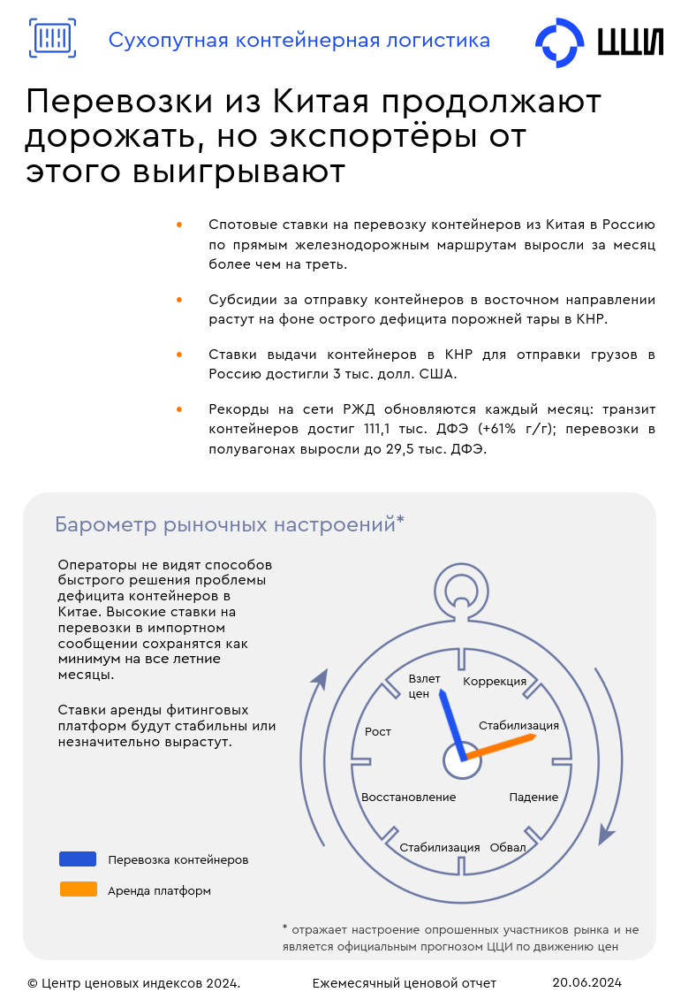

Железная дорога
 Сухопутная логистика
Сухопутная логистика
Индексы
Котировки
31.08.2024 Сухопутная логистика
Что ещё не менялось в 2024 г.? Ставки на полувагоны! Ставки предоставления полувагонов под перевозку угля стабильны и уже 8-ой месяц подряд колеблются в пределах нескольких процентов.
31.08.2024 Сухопутная логистика
Что ещё не менялось в 2024 г.? Ставки на полувагоны! Ставки предоставления полувагонов под перевозку угля стабильны и уже 8-ой месяц подряд колеблются в пределах нескольких процентов.
Методология
Мероприятия
31.08.2024 Пятница с ЦЦИ: уголь
Материалы вебинара
Аналитика
Демо-версия
 Подпишитесь, чтобы прочитать полную версию.
Контакты клиентской службы: subscribe@pbc-index.ru